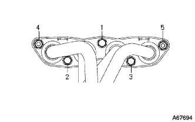
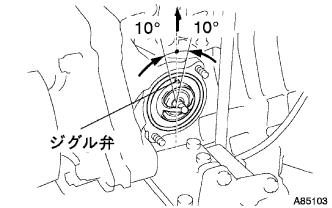
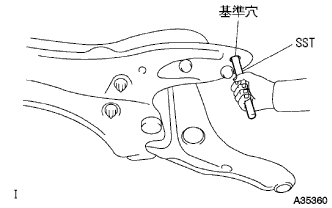
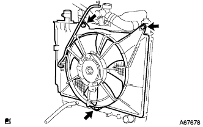
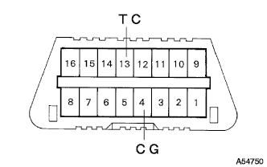

パーシャルエンジンASSY 取り付け |
| 1. エキゾースト マニホルド取り付け |
|  |
新品のガスケットを介して、エキゾーストマニホルドを図の順序で締め付ける。
| 2. マニホルドサポート ブラケット取り付け |
ボルト3本で、マニホルドサポートブラケットを取り付ける。
| 3. エキゾーストマニホルドヒート インシュレータ NO.1取り付け |
ボルト4本で、エキゾーストマニホルドヒートインシュレータを取り付ける。
| 4. E.F.I. ウォータテンパラチャ センサ取り付け |
 |
SSTを使用して、新品のガスケットを介しE.F.I..ウォータテンパラチャを取り付ける。
| 5. ノックコントロール センサ取り付け |
 |
SSTを使用して、ノックコントロールセンサを取り付ける。
| 6. エンジン オイルプレッシャ スイッチASSY取り付け |
 |
ねじ部にアドヘシブ1324塗布する。
ディープソケットレンチ(24ｍｍ)を使用して、オイルプレッシャスイッチを取り付ける。
オイルプレッシャスイッチ用コネクタを接続する。
| 7. サーモスタット取り付け |
新品のガスケットをサーモスタットに取り付ける。
|  |
図のようにジグル弁を上側にしてサーモスタットを取り付ける。
| 8. ウォータ インレット取り付け |
ナット２個で、ウォータインレット Ｗ／ラジエータアウトレットホースを取り付ける。
| 9. ウォータバイパス パイプ NO.1取り付け |
新品のガスケットを介し、ボルト2本およびナット2個でウォータバイパスパイプNo.1を取り付ける。
| 10. オイルレベルゲージ ガイド取り付け |
新品のOリングにエンジンオイルを塗布し、オイルレベルゲージガイドに取り付ける。
ボルトでオイルレベルゲージガイドを取り付ける。
オイルレベルゲージを取り付ける。
| 11. インテーク マニホルド取り付け |
新品のガスケットをインテークマニホールドに取り付ける。
 |
図の順序でインテークマニホルドを仮締めした後、規定トルクで締め付ける。
インテークマニホールドにワイヤハーネスを接続する。
ボルト2本で、ブレーキブースタ用バキュームチューブを取り付ける。
| 12. オルタネータASSY取り付け |
 |
ボルトBでオルタネータを仮付けする。
 |
ボルトAおよびナットでファンベルトアジャスティングバーを仮付け後、オルタネータをシリンダブロック側に寄せてナットを本締めする。
ワイヤハーネスクランプを取り付ける。
コネクタを接続する。
ナットで+B端子を取り付ける。
ターミナルキャップを取り付ける。
| 13. イグニッション コイル NO.1取り付け |
ボルトで各イグニッションコイルNo.1を取り付ける。
| 14. ドライブプレート ＆ リング ギヤSUB-ASSY取り付け |
 |
SSTを使用して、クランクシャフトダンパを固定する。
 |
ドライブプレート & リングギヤ取り付け
ボルトおよびねじ穴を清掃する。
ボルトにアドへシブ1324を塗布する｡
図の順序でボルトを締め付ける｡
| 15. オートマチックトランスアクスルASSY取り付け |
 |
オートマチックトランスアクスルをエンジンに取り付け、図の位置のボルト7本を締め付ける。
|
SSTを使用してクランクシャフトを固定する。
 |
トルクコンバータセットボルトを取り付ける。
| 16. スタータASSY取り付け |
ボルト2本でスタータASSYを取り付ける。
コネクタを接続する。
ナットで30端子を取り付ける。
ターミナルキヤツプを閉じる。
| 17. フロントサスペンション クロスメンバSUB-ASSY取り付け |
ボルトで、エンジンマウンティングインシュレータRRとエンジンマウンティングブラケットRRを取り付ける。
| 18. ベーン ポンプASSY取り付け |
ボルト2本でベーンポンプASSYを取り付ける。
コネクタを接続する。
 |
ベーンポンプVベルトを取り付ける。
Vベルトの張力を調整し、調整用ボルトBを締付ける。
固定用ボルトAを締付ける。
ベーンポンプVベルトの張力およびたわみ量を点検する。
| 19. エンジンASSY W/トランスアクスル取り付け |
 |
エンジンASSY W/トランスアクスルおよびフロントサスペンションクロスメンバをエンジンリフタにセットする。
 |
ボルト4本で、エンジンASSY W/トランスアクスルおよびフロントサスペンションクロスメンバを仮組み付けする。
 |
ボルト2本で、エンジンマウンティングインシュレータLHを取り付ける。
 |
ボルト5本およびナットで、エンジンインシュレータRHを取り付ける。
|  |
SSTをサスペンションクロスメンバRH側および車両ＲＨ側の基準穴に差し込む。
ボルトA、Bの順序で仮締めする。
SSTをサスペンションクロスメンバRH側および車両RH側の基準穴に差し込み、規定トルクで締め付ける。
SSTをサスペンションクロスメンバLH側および車両LH側の基準穴に差し込む。
ボルトA、Bの順序で仮締めする。
SSTをサスペンションクロスメンバLH側および車両LH側の基準穴に差し込み、規定トルクで締め付ける。
| 20. フロントドライブ シャフトASSY LH取り付け |
インボードジョイントASSY LHのスプライン部にオートフルードタイプT-IVを塗布する。
 |
シャフトのスプラインをかん合させ、ブラスバーおよびハンマーを使用して、ドライブシャフトASSY LHを挿入する。
| 21. フロントドライブ シャフトASSY RH取り付け |
| 22. フロントアクスルASSY LH取り付け |
フロントアクスルASSYを車両外側に押して、アクスルASSYにドライブシャフトASSYのスプラインをかん合させ、挿入する。
| 23. フロントアクスルASSY RH取り付け |
| 24. タイロッド エンドSUB-ASSY LH取り付け |
タイロッドエンドをステアリングナックルに取り付け、キャッスルナットで締め付ける。
新品のコッターピンを取り付ける。
| 25. タイロッド エンドSUB-ASSY RH取り付け |
| 26. フロントサスペンションロワーアームNo.1 LH取り付け |
ロワーアームASSYのステアリングナックルに取り付け、キャッスルナットで締め付ける。
新品のクリップを取り付ける。
| 27. フロントサスペンションロワーアームNo.1 RH取り付け |
| 28. スタビライザ バー FR取り付け |
クッションリテーナNo.1を2個、クッション2個およびスタビライザバーを図の向きになる様に取り付け、ナットで締め付ける。
 |
スタビライザボルトをスパナ(10mm)で固定し、新品のナットを締め付ける。
| 29. スピード センサ FR LH取り付け |
ボルトで、スピードセンサワイヤおよびフレキシブルホースをショックアブソーバASSYに取り付ける。
 |
クリツプをショックアブソーバASSYに取り付ける。
 |
ボルトで、スピードセンサＦＲをステアリングナックルに取り付ける。
| 30. スピード センサ FR RH取り付け |
| 31. フロントアクスル シャフト ナット LH取り付け |
ソケツトレンチ(30mm)を使用して、新品のハブナットを取り付ける。
 |
タガネおよびハンマーを使用して、ナットをかしめる。
| 32. フロントアクスル シャフト ナット RH取り付け |
| 33. エキゾーストパイプASSY FR取り付け |
ノギスを使用して、コンプレッションスプリングの自由長を測定する。
 |
新品のガスケツトを木片およびハンマーを使用して、エキゾーストマニホルドの面一まで徐々に打ち込む。
ボルト2本で、エキゾーストマニホルドにエキゾーストパイプASSY FRを取り付ける。
| 34. ステアリングスライディング ヨークSUB-ASSY接続 |
クリップAを付け、ホールカバーおよびクリップBをボデーに取り付ける。
 |
合わせマークを合わせて、ボルトでスライディングヨークを取り付ける。
 |
ステアリングホイール回転防止用シートベルトを取りはずす。
| 35. ステアリングコラムホールカバー プレート取り付け |
クリップ2個でホールカバープレートを取り付ける。
| 36. クーラコンプレッサ W/マグネットクラッチASSY取り付け |
ボルト4本で、コンプレッサASSYを取り付ける。
コネクタを接続する。
| 37. ファン ＆ オルタネータ Vベルト取り付け |
ファン & オルタネータVベルトを取り付ける。
 |
ハブナットレンチまたはバーなどを使用して、オルタネータを車両フロント側に押して、ファン & オルタネータVベルトの張力を調整する。
 |
調整用ボルトAを締め付けてから、固定用ボルトBを締め付ける。
ファン & オルタネータVベルトの張力およびたわみ量を点検する。
| 38. エンジンワイヤ取り付け |
エンジンワイヤをエンジンコントロールコンピュータおよびジャンクションブロックに接続する。
エンジンワイヤをエンジンルームJ/Bに取り付ける。
アース線を取り付ける。
グラブボックスを取り付ける。
| 39. フューエル チューブSUB-ASSY接続 |
フユーエルチユーブを接続する。
| 40. ヒータウォータ ホース インレット A接続 |
クランプを取り付け、ヒータウォータインレットホースAを接続する。
| 41. ヒータウォータ ホース アウトレット A接続 |
クランプを取り付け、ヒータウォータアウトレットホースAを接続する。
| 42. ユニオン トゥー チェックバルブ ホース接続 |
ユニオン ツウ チェックバルブホースを接続する。
| 43. コラムシフト トランスミッション コントロールケーブルASSY取り付け |
ナットで、コントロールケーブルをコントロールシャフトレバーに仮付けする。
新品のクリップで、コントロールケーブルをブラケットに固定する。
| 44. アクセルレータ コントロールケーブルASSY取り付け |
アクセルレータコントロールケーブルASSYを取り付ける。
| 45. シリンダヘッド カバー NO.2取り付け |
 |
ナットA2個を締め付け後、ナットB2個でシリンダヘッドカバーNo.2を取り付ける。
| 46. ラジエータASSY取り付け |
ラジエータASSYにサブラジエータサポートクツシヨンおよびラジエータサポートLWRを取り付ける。
 |
ボルト2本で、ウオータフィラを取り付ける。
|  |
ボルト3本で、ファンシユラウド W/ファンを取り付ける。
車両にラジエータASSYを取り付け、クーリングフアンモータのコネクタおよびワイヤハーネスクランプを接続する。
| 47. ラジエータ サポートSUB-ASSY UPR取り付け |
ボルト4本およびクリップ1個で、ラジエータサポートUPRを取り付ける。
ホーンASSYのコネクタおよびクランプを接続する。
| 48. フードロックサポート ブレース取り付け |
ボルト4本で、ボンネット(フード)ロックサポートブレースを取り付ける。
| 49. フードロック サポートSUB-ASSY取り付け |
ボルト3本で、ボンネット(フード)ロックサポートを取り付ける。
| 50. フード ロックASSY取り付け |
ボンネツトロツクASSYにボンネツトロツクコントロールケーブルASSYを接続する。
 |
ボルト3本で、ボンネツトロツクASSYを仮付けする。
| 51. ラジエータ グリル W/ラジエータ サポート シール UPR取り付け |
ラジエータ グリルとラジエータ サポート シール UPRを組み付ける。
 |
ラジエータグリル下部のツメを合わせ、クリップ6個でラジエータ グリル W/ラジエータ サポート シール UPRを取り付ける。
| 52. オイルクーラインレット ホース取り付け |
オイルクーラインレットホースを接続し、クランプを取り付ける。
| 53. オイルクーラアウトレット ホース取り付け |
オイルクーラアウトレットホースを接続し、クランプを取り付ける。
| 54. ラジエータ インレット ホース取り付け |
ラジエータインレットホースを接続し、クランプを取り付ける。
| 55. ラジエータ アウトレットホース取り付け |
ラジエータアウトレットホースを接続し、クランプを取り付ける。
| 56. エア クリーナASSY取り付け |
ボルト4本で、エアクリーナケース W/エアクリーナインレットNo.1およびNo.2を取り付ける。
エアクリーナフィルタエレメントを取り付ける。
エアクリーナキャップ W/エアクリーナホースNo.1を取り付ける。
| 57. バッテリ取り付け |
バッテリトレイを取り付ける。
バッテリを取り付ける。
ボルトおよびナットでバッテリクランプを取り付ける。
| 58. フロントタイヤ取り付け |
| 59. オートマチツクトランスアクスルフルード補充 |
| 60. エンジンオイル補充 |
| 61. 冷却液補充 |
ラジエータドレーンコツクプラグを閉じて、冷却水をラジエータ注入口よりあふれるまで注入する。［＊１］
ラジエータキヤツプを締める。
ラジエータリザーブタンクに冷却液を上限まで注入する。
エンジンをサーモスタツトが開弁するまで暖機する。
エンジンを止め、冷却液が冷えるまで待ち、ラジエータキヤツプをはずして水位を確認する。
水位が下がっている場合は、［＊１］より繰り返す。
水位が下がらなくなったら、ラジエータリザーバタンクの冷却液を調整する。
| 62. オイル漏れ点検 |
| 63. 燃料漏れ点検 |
燃圧のかかった状態で燃料系統に漏れがないことを確認する。
| 64. 冷却液漏れ点検 |
冷却液を満水にしてテスターを取り付ける。
137ｋＰａ｛1.4ｋｇｆ/ｃｍ２｝の圧力をかけ、各部に水漏れがないことを確認する。
| 65. シフトレバー位置点検 |
シフトレバーをNレンジから各レンジにシフトする。このときシフトレバーが円滑に操作でき、各レンジに節度よく動き、ポジションインジケータが表示しシフトレバー位置が一致していることを確認する。
シフトレバーを手前に引いたときのみP、R、Lの各レンジにシフトできることを確認する。
エンジンを始動し、Dレンジにシフトしたとき車両が前進し、Rレンジにシフトしたときブザー音がして車両が後退することを確認する。
| 66. シフトレバー位置調整 |
コントロールシャフトレバーのナットをはずし、コントロールケーブルを切り離す。
コントロールシャフトレバーを反時計方向へ止まるまで回し、そこから2段階戻した位置(Nレンジ)にする。
 |
図のように、シフトレバーをNレンジにシフトし、Rレンジ側に押し付けた状態で、コントロールケーブルを取り付け、ナットで締付ける。
調整後、操作具合および作動を点検する。
| 67. エンジンアンダ カバー LH取り付け |
スクリュー2個およびボルト2本で、エンジンアンダーカバーLHを取り付ける。
| 68. エンジンアンダ カバー RH取り付け |
スクリュー2個およびボルト2本で、エンジンアンダーカバーRHを取り付ける。
ナットを、締め付ける。
| 69. エンジンアイドル回転点検 |
ＴａSCANによる点検
エンジンを暖機する。
DLC3にＴａSCANを接続する。
画面指示に従って操作を行い、[点火時期点検]画面を表示させ、アイドル回転数を測定する。
一次電流検出タイプの回転計による点検
 |
DLC3の9(TAC)端子にタコパルスピックワイヤNo.2を取り付け、回転計を接続しアイドル回転数を測定する。
| 70. 点火時期点検 |
ＴａSCANによる点検
エンジンを暖機する。
DLS3にＴａSCANを接続する。
画面表示に従って操作し、[ECUデータモニター]画面を表示させる。
点火時期が基準値内であることを確認する。
エンジン回転を上げたとき、点火時期がすみやかに進角することを確認する。
[アクティブテスト]画面を表示させ、点火時期＃1を選択後、TC端子ON状態で測定する。
一般計器による点検
エンジンを暖機する。
シリンダヘッドカバーNo.2を取りはずす。
 |
図の位置のワイヤーハーネスを引きだし、タイミングライトのクリップをワイヤハーネスに接続する。
|  |
ダイアグノーシスチェックワイヤNo.2を使用して、DLC3の13(TC)←→4(CG)端子間を短絡する。
点火時期が基準値内であることを確認する。
DLC3の13(TC)←→4(CG)端子間を開放する。
点火時期が基準値内であることを確認する。
エンジン回転数を上げたとき、点火時期がすみやかに進角することを確認する。
| 71. CO，HC濃度点検 |
エンジンを始動する。
2500ｒ/ｍｉｎで180秒間レーシングする。
アイドル回転時にテスタプローブを40ｃｍ以上テールパイプに挿入する。
CO、HC濃度の点検を行う。
ＣＯ、ＨＣが基準値外の場合は、下に示した手順で行う。
オキシジエンセンサ点検
下の表を参考にトラブルシューティングを行う。
| CO | HC | 不具合 | 推定原因 |
|---|---|---|---|
| 正常 | 高い | ラフアイドル | 1.イグニッション不良
3.吸排気ガスもれ 4.シリンダ圧縮もれ |
| 低い | 高い | ラフアイドル（HC不安定） | 1.負圧もれ
|
| 高い | 高い | ラフアイドル（黒煙） | 1.エアエレメントつまり 2.PCVバルブつまり 3.EFIシステム不良
|
| 72. フロントホイールアライメント点検·調整 |
参照)| 73. テストモード点検(スピードセンサ系統) |
参照)